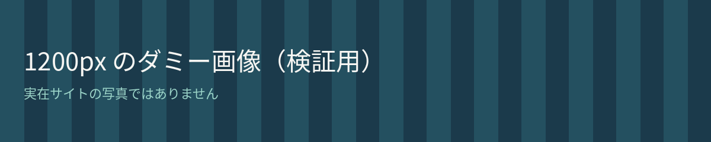

1. 幅を指定した大きい画像
幅 1200px の画像を、本文より大きく表示する指定にしています。追加の max-width が無いと、画面の右へはみ出します。

2. 空白のない長い URL
詳細は https://example.com/sample/this-is-a-very-long-dummy-path-without-spaces-that-overflows-the-content-column-on-small-screens を見てください（実在しないパスです）。
3. 列の多い表
列が多く、セルで折り返さない表です。修正後は表の外側だけ横スクロールし、ページ全体は押さないようにします。
| 項目A | 項目B | 項目C | 項目D | 項目E | 項目F | 項目G | 項目H |
|---|---|---|---|---|---|---|---|
| ダミー値 01 | ダミー値 02 | ダミー値 03 | ダミー値 04 | ダミー値 05 | ダミー値 06 | ダミー値 07 | ダミー値 08 |
| ダミー値 11 | ダミー値 12 | ダミー値 13 | ダミー値 14 | ダミー値 15 | ダミー値 16 | ダミー値 17 | ダミー値 18 |